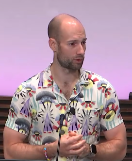
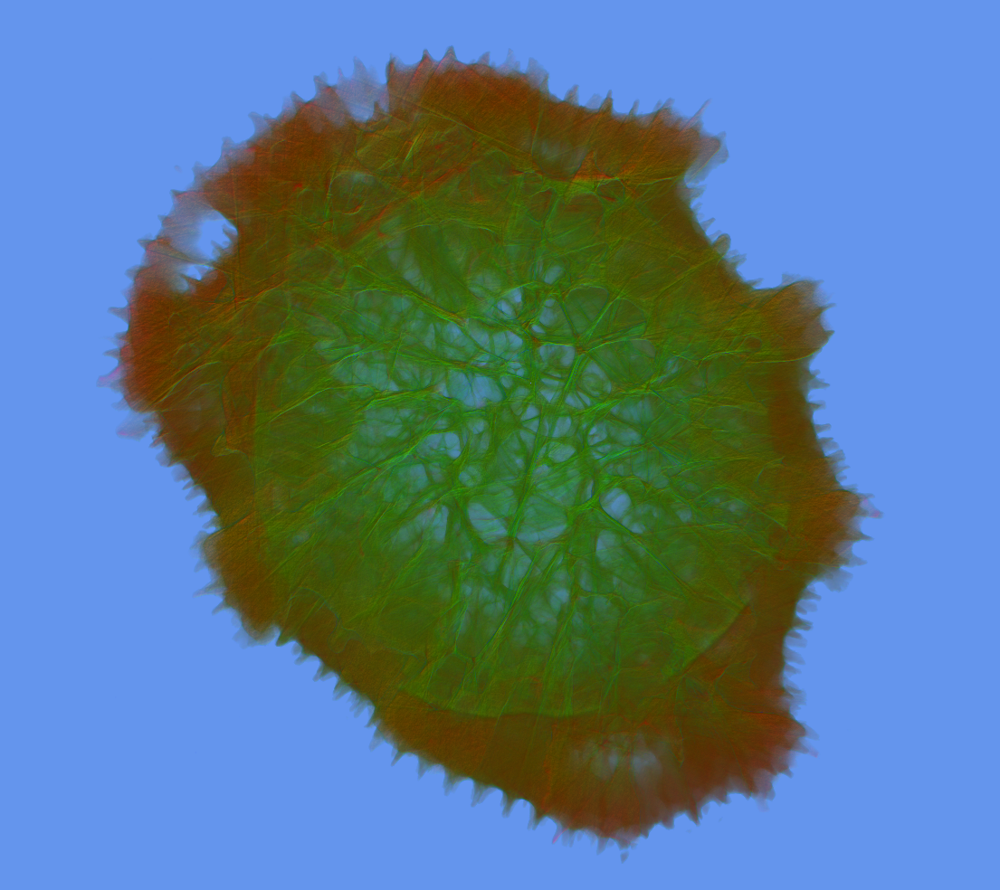
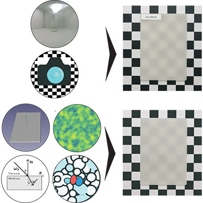
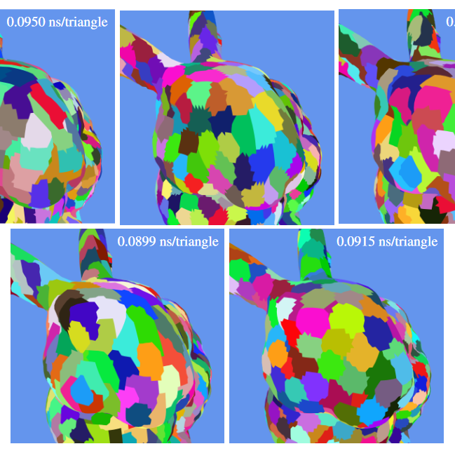
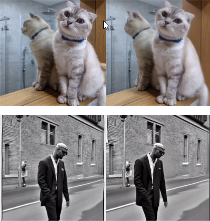
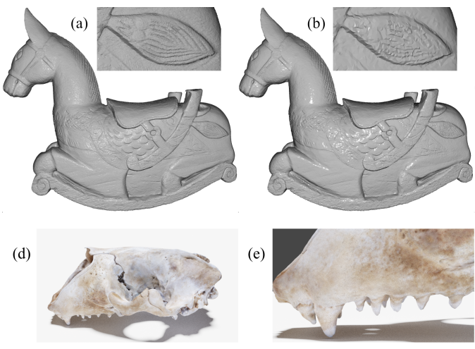
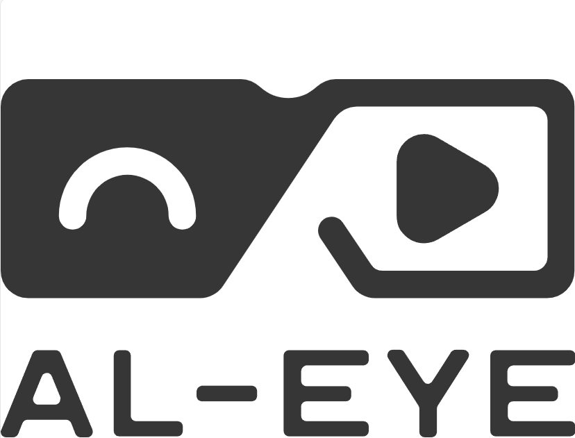
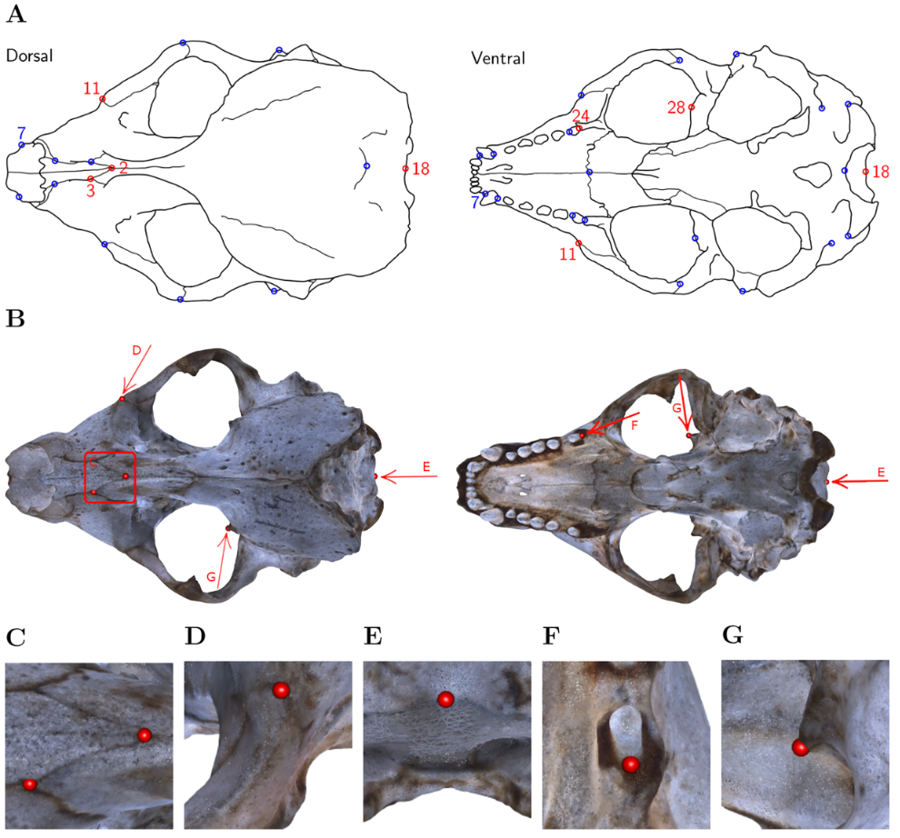
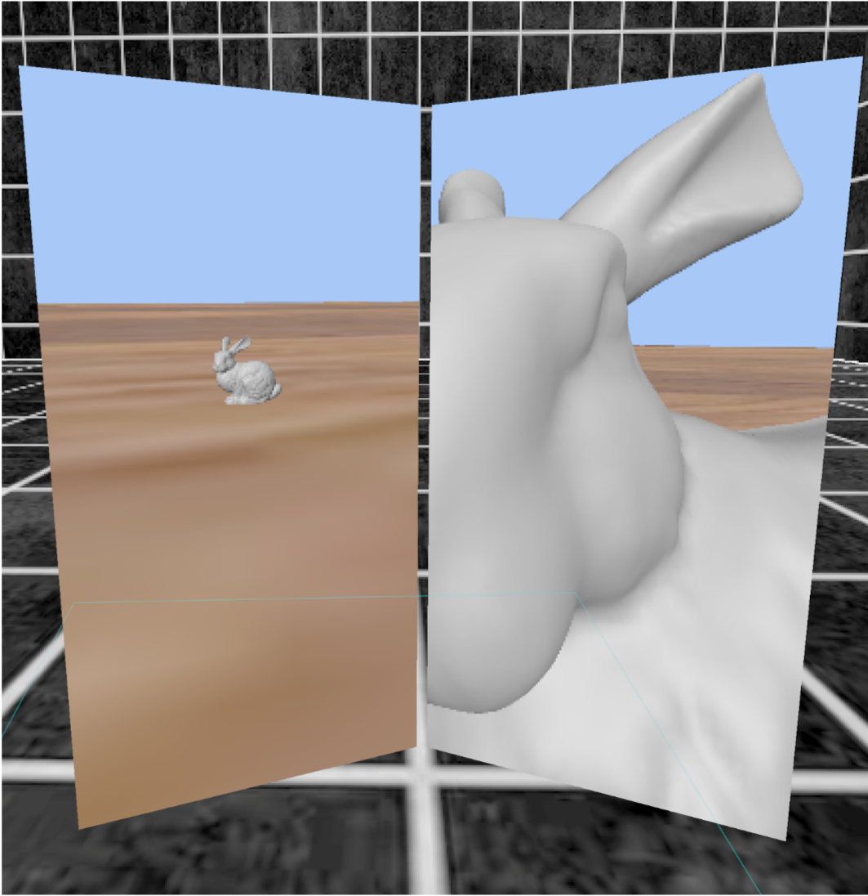

Mark Bo Jensen
Visualization & Appearance Researcher
My research focuses on high-performance visualization and the accurate simulation of material appearance for complex 3D structures. Whether the goal is to highlight underlying geometric properties or to construct high-fidelity digital twins, my work bridges Scientific Visualization (SciVis) and Physically Based Rendering (PBR). I currently hold a position as a Tenure Track Assistant Professor at the Technical University of Denmark (DTU).
This research is grounded in over a decade of experience bridging industry and academia. From my time as a Team Lead at Dalux to my current work, my technical expertise remains consistent: building bespoke, high-performance rendering architectures tailored for the most demanding large-scale geometric and volumetric datasets.
The best way to reach me is via email.

Selected Publications

Jinsoku: A Data-Centric Visualization Engine
@inproceedings{jensen2026Jinsoku,
author = {Jensen, Mark Bo and Frisvad, Jeppe Revall and Pranovich, A. and Murthy, S. and K{\"u}hl, M. and B{\ae}rentzen, J. Andreas},
title = {Jinsoku: A Data-Centric Visualization Engine},
booktitle = {The Gap between Visualization Research and Visualization Software (VisGap2026)},
publisher = {The Eurographics Association},
month = {jun},
year = {2026},
note = {To appear},
}
Digitizing translucent object appearance by validating computed optical properties
@article{tran2024Translucent,
author = {Tran, Duc Minh and Jensen, Mark Bo and Santaf\'{e}-Gabarda, Pablo and K\"{a}llberg, Stefan and Ferrero, Alejandro and Hannemose, Morten Rieger and Frisvad, Jeppe Revall},
journal = {Appl. Opt.},
keywords = {Absorption coefficient; Bidirectional reflectance distribution function; Camera calibration; Optical properties; Spectral properties; Turbid media},
number = {16},
pages = {4317--4331},
publisher = {Optica Publishing Group},
title = {Digitizing translucent object appearance by validating computed optical properties},
volume = {63},
month = {jun},
year = {2024},
url = {https://opg.optica.org/ao/abstract.cfm?URI=ao-63-16-4317},
doi = {10.1364/AO.521974},
}
Performance Comparison of Meshlet Generation Strategies
@article{jensen2023Meshlet,
author = {Jensen, Mark Bo and Frisvad, Jeppe Revall and B{\ae}rentzen, J. Andreas},
title = {Performance Comparison of Meshlet Generation Strategies},
year = {2023},
month = {dec},
day = {8},
journal = {Journal of Computer Graphics Techniques (JCGT)},
volume = {12},
number = {2},
pages = {1--27},
url = {http://jcgt.org/published/0012/02/01/},
issn = {2331-7418},
}Visualization Gallery
Real-time rendering and volumetric data processing from custom C++ cores.
Open Source / Code
View @SenbyoSelected C++ rendering architectures, visualization engines, and geometry tools.
Senbyo / jinsoku
Data-centric visualization engine. High-performance C++ architecture for the real-time processing and rendering of large-scale scientific data.
Senbyo / meshletmaker
Hardware-accelerated geometry pipeline tool for evaluating and generating optimal mesh clustering for real-time rendering constraints.
Publications
Core Research (SciVis / PBR)
Jinsoku: A Data-Centric Visualization Engine
@inproceedings{jensen2026Jinsoku,
author = {Jensen, Mark Bo and Frisvad, Jeppe Revall and Pranovich, A. and Murthy, S. and K{\"u}hl, M. and B{\ae}rentzen, J. Andreas},
title = {Jinsoku: A Data-Centric Visualization Engine},
booktitle = {The Gap between Visualization Research and Visualization Software (VisGap2026)},
publisher = {The Eurographics Association},
month = {jun},
year = {2026},
note = {To appear},
}Digitizing translucent object appearance by validating computed optical properties
@article{tran2024Translucent,
author = {Tran, Duc Minh and Jensen, Mark Bo and Santaf\'{e}-Gabarda, Pablo and K\"{a}llberg, Stefan and Ferrero, Alejandro and Hannemose, Morten Rieger and Frisvad, Jeppe Revall},
journal = {Appl. Opt.},
keywords = {Absorption coefficient; Bidirectional reflectance distribution function; Camera calibration; Optical properties; Spectral properties; Turbid media},
number = {16},
pages = {4317--4331},
publisher = {Optica Publishing Group},
title = {Digitizing translucent object appearance by validating computed optical properties},
volume = {63},
month = {jun},
year = {2024},
url = {https://opg.optica.org/ao/abstract.cfm?URI=ao-63-16-4317},
doi = {10.1364/AO.521974},
}
StereoDiffusion: Training-Free Stereo Image Generation Using Latent Diffusion Models
@inproceedings{Wang_2024_CVPR,
author = {Wang, Lezhong and Frisvad, Jeppe Revall and Jensen, Mark Bo and Bigdeli, Siavash Arjomand},
title = {StereoDiffusion: Training-Free Stereo Image Generation Using Latent Diffusion Models},
booktitle = {Proceedings of the IEEE/CVF Conference on Computer Vision and Pattern Recognition (CVPR) Workshops},
month = {jun},
year = {2024},
pages = {7416-7425},
}Performance Comparison of Meshlet Generation Strategies
@article{jensen2023Meshlet,
author = {Jensen, Mark Bo and Frisvad, Jeppe Revall and B{\ae}rentzen, J. Andreas},
title = {Performance Comparison of Meshlet Generation Strategies},
year = {2023},
month = {dec},
day = {8},
journal = {Journal of Computer Graphics Techniques (JCGT)},
volume = {12},
number = {2},
pages = {1--27},
url = {http://jcgt.org/published/0012/02/01/},
issn = {2331-7418},
}
Tools for Virtual Reality Visualization of Highly Detailed Meshes
@inproceedings{jensen2021Tools,
booktitle = {VisGap - The Gap between Visualization Research and Visualization Software},
editor = {Gillmann, Christina and Krone, Michael and Reina, Guido and Wischgoll, Thomas},
title = {{Tools for Virtual Reality Visualization of Highly Detailed Meshes}},
author = {Jensen, Mark B. and Jacobsen, Egill I. and Frisvad, Jeppe Revall and Bærentzen, J. Andreas},
year = {2021},
publisher = {The Eurographics Association},
isbn = {978-3-03868-149-6},
doi = {10.2312/visgap.20211088},
}Collaborations

Virtual Reality: The Future Of Visual Field Testing
@inproceedings{gasior2024VisualField,
author = {G\k{a}sior*, Kacper B\l{}a\.{z}ej and Jensen*, Mark Bo and Maare, Jonas Ulveman and Doherty, Kevin and Mulvey, Fiona Br\'{\i}d},
title = {Virtual Reality: The Future Of Visual Field Testing},
year = {2024},
isbn = {9798400710612},
publisher = {Association for Computing Machinery},
address = {New York, NY, USA},
url = {https://doi.org/10.1145/3675231.3678877},
doi = {10.1145/3675231.3678877},
booktitle = {ACM Symposium on Applied Perception 2024},
articleno = {23},
numpages = {2},
keywords = {mixed reality, perimetry test, virtual reality, vision loss, visual field},
location = {Dublin, Ireland},
series = {SAP '24}
}
Using virtual reality for anatomical landmark annotation in geometric morphometrics
@article{messer2022Landmark,
title = {Using virtual reality for anatomical landmark annotation in geometric morphometrics},
author = {Messer, Dolores and Atchapero, Michael and Jensen, Mark B and Svendsen, Michelle S and Galatius, Anders and Olsen, Morten T and Frisvad, Jeppe R and Dahl, Vedrana A and Conradsen, Knut and Dahl, Anders B and others},
journal = {PeerJ},
volume = {10},
pages = {e12869},
year = {2022},
publisher = {PeerJ Inc.},
}Ph.D. Dissertation

Virtual Reality-Based Visualization of Large Geometric Data
Architectural Focus: While the applied output of this research targeted interactive environments, the core scientific contribution was the design of high-performance rendering pipelines. This work established foundational techniques for the real-time processing, clustering, and visualization of massive geometric datasets under strict performance constraints.
@phdthesis{jensen2022vrvis,
author = {Jensen, Mark Bo},
title = {Virtual Reality-Based Visualization of Large Geometric Data},
school = {Technical University of Denmark},
year = {2022},
month = {dec}
}